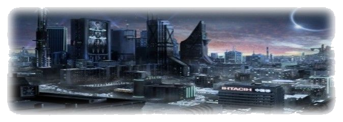
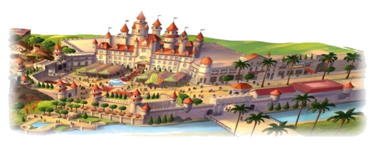
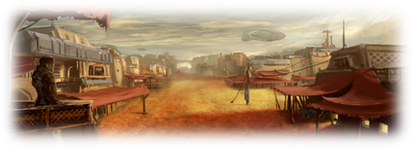
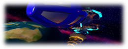
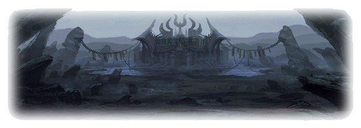

Places
📌
GeekCity
The urban city most similar to the great powers of the twenty-first century. Don't expect to see flying cars, robot maids or anything like that there. Despite the year, many technologies were lost so there was not such a big advance. The founder of Geekcity was Omenn. Omenn already lived in this region, but in his childhood it was just a small village with a school. Omenn was a very intelligent and creative boy, he loved to invent things. After saving for a while his money from work he did on the farms, he managed to buy a wagon. With this wagon, Omenn began to travel around. Every time he went, he discovered a new technology, and he added copies to his cart. After several times returning with the cart full of equipment, that village began to have a great income. Omenn created an assembly plant, where he made replicas of those equipment for sale. With his earnings he made his own laboratory. This laboratory became quite famous for its variety of equipment; famous scientists like Manoel's parents began to work there, where they made inventions that the outside bought for millions of dollars. Thus, by investing, that place went from a village to a big city, all thanks to Omenn's efforts. But contrary to what it seems, Omenn did not become king, president or anything like that, he limited himself to being just any resident citizen.
Nurps
Nurps is a region bordering Geekcity. A very beautiful city, with aspects that resemble the European Middle Ages, Nurps continues with the Monarchy system. Its current king, Dom Cruz III, is a just and kind king, so Nurps continues to progress, and his civilians are satisfied with his rule and trust him. Although the city still adopted many ancient features, such as castles, knighthood, and burghers, this mixed with the immigrant culture of Geekcity, giving a mix in the ideals. Dom Cruz III is a religious who inherited his religion from the first king and his grandfather: Dom Cruz, who was the one who organized that city and named it based on a set of books he liked. Dom Cruz III named his daughter Clari because he considered her a religious symbol of light, he wanted Clari to clarify the world, to clarify people's lives. The great castle of Nurps has several areas, and one of them is the Arena, a competitive and also leisure environment for many families, where warriors, both from Nurps itself and from other regions, meet to battle, bets can be placed, and the one who won the most fights would grow his ranking, each ranking has its rivals for a possible ranking climb, High ranks have cash rewards, and the longer a warrior stays in this high rank, the more times he will receive this amount, similar to a salary. The Nurps guard makes it known as one of the safest cities in existence; any self-respecting crime that is legitimized, the actor is hunted by the guards undeterred until he is found and thrown into the castle jail, paying there the time that is estimated depending on the severity of the crime. The jail is also free for visits, but is guarded by guards at all times. The captain of the guards, very loyal to his king and his favorite, is the so-called Groak, the strongest and most imposing soldier in Nurps, and also the oldest of the group. Groak also has a secret mission which is to protect the king's daughter: Clari.
Halabastra
The largest city of S.A. Halabastra also has an arid climate and is quite uncomfortable for foreigners. Halabastra is surrounded by a vast desert and its whereabouts are similar to those of the Indies. Because it is a very large land, Halabaster has dividers of surrounding cities with a similar appearance, but with different rulers. The major ruler in Halabastra is Sultan Laden Hassen, a very imposing man. Laden, being single, has always been strict and serious, but after meeting Clari, his fatherly instincts began to awaken.
Icevalley
The least populated city in S.A., both for its climate with constant temperatures below zero and for the bad impression that the city gives of sadness, death, and the legends that exist about the city. The center of the city is marked by the church, which is taken care of only by a girl daughter of the owner, as her father was murdered by a demoniac. Behind the church is a vast cemetery guarded by a mysterious gravedigger with a green skin. There are many legends about this gravedigger, some say that he is a redeemed "fracción" who has taken human form, others believe that he has already been killed and remains there as a lost soul, there are also those who say that that skin tone is due to an incurable disease that he has, and for these many reasons no one dares to talk to him. People who live in Icevalley are always discouraged and distressed, most without an apparent cause, believing it to be bad luck given by the city. Because there are no walls or anything like that protecting the city, often "fractions"? attack the unsuspecting residents (one of the reasons for the low population).
M.C.P.
MCP (Master Cracker Plan) is an association formed by the people considered the most powerful of the century. Created by a man named Manoel Crunx, a renowned biologist who had a utopia of creating a new world so that the good people who suffer here could live in peace. Manoel invested in a giant spaceship that could be inhabited even in orbit, and it was in this spaceship that MCP lived, looking for another planet that could be inhabited. After several years they finally found a planet, and then began to search for it. Manoel was an expert in organisms, and after studying some beings that lived there he finally understood the formula of life, creating more resistant species of human beings. However, after seeing that society he created, Manoel no longer wanted ordinary people to live there, in fact he didn't want them to exist anymore, only those of that world. At this moment Manoel freaked out and sought to destroy the Earth, creating a nuclear weapon to blow it up. The MCP did not agree with this new idea of Manoel, trying to stop him, realizing that not even his own association supported him, they also sought to kill them, but when they realized this they locked him in a room until he returned to normal, but to their surprise, after so long in prison, Manoel committed suicide. After this tragic situation, MPC decided to choose a new leader, who was Manoel's apprentice right-hand man, Mr. Alpha, following his old ideals. For reasons of secrecy and respect, the members of the MCP always wear white masks, and use a code name in Greek numbers to identify themselves. The mutation that Manoel made in their bodies made them able to return to the form of molecules and move through the air at incredible speed, then return to their original form, basically a slow teleportation. Although all members of the MCP have this ability, some members have better control than others. The table at MCP HQ is in the shape of an "M", where the 3 main members are in the middle and the others are 4 on each side. Now MCP has two goals: the first is to keep the peace in that futuristic world they had created and the second is to find a way to stop Master Cracker, because although Master Cracker was very different from the original Manoel Crunx, they knew the chaos that was happening on Earth and recognized Manoel's personality. With 11 members, MCP is the only one that has complete information about Shadow G.
Underworld
Home to all fraccions. The location of this place is unknown, some believe it is not part of the Earth, some say it is below the Earth, some say they have already been there, but one thing is certain, this place exists. Although the underworld is home to certain living beings after death, it is not the final destination, that is, it is possible to die in the underworld, but in very specific cases.